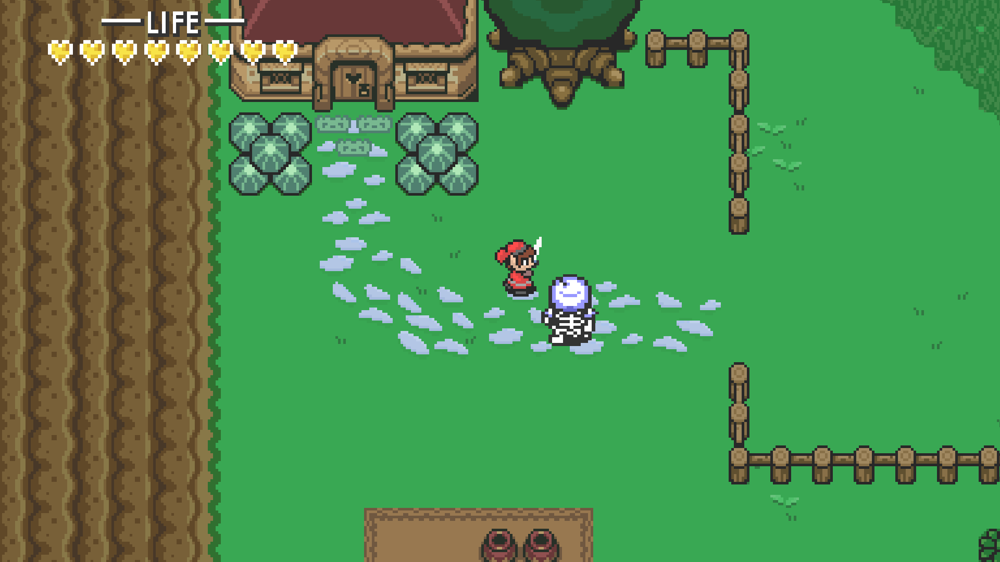
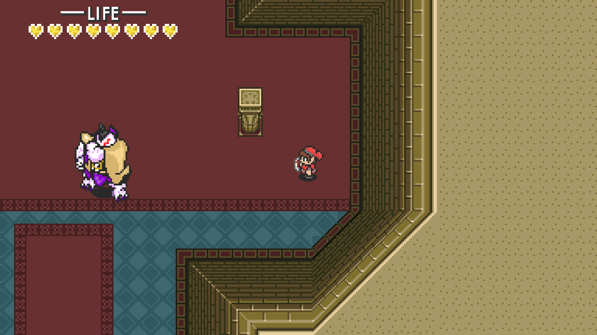

Created with C++ and SFML
"The Legend of the Crimson King" was my data structures team's first forray into programming with graphics. This game was created from scratch in the Spring of 2020, the semester before we created "Mega Mini Golf". Einon Rutger, Bobby Templin, and I worked with SFML and C++ in Visual Studios inspired by the gameplay of Nintendo's "The Legend of Zelda: A Link to the Past". Great challenges were encountered in creating and managing gamestates, updating graphics, and moving players and enemies.
In implementing the player handling, Bobby did a lot of research on the most efficient ways to control the character within 8 directions (up, down, left, right, and the diagonals). A lot of time was spent creating and retexturing sprite sheets to animate character movement for each and every direction. We went above and beyond in illustrating the WSU Cougar theme for our main character who is destined to fight a giant purple and gold Husky.

Technical challenges were found in updating and displaying character health, loading and displaying custom levels, constructing pathfinding for the enemy AI, and animating smoothly in SFML's graphics system. Being a simple 2D pixel-style game, a lot of what we did was managed by breaking things down into grids and cells. The levels, for example, are loaded in with a method found by Bobby where they are created and read as spreadsheet files, and then parsed and displayed to the window.

By the end of this project our Object Oriented Programming skills were greatly strengthed in maintaining multiple files and designing inheritance of character controls to players, enemies, etc. Organization was crucial for having this short game control and animate well, and this patience for proper project upkeep will help me greatly moving forward.